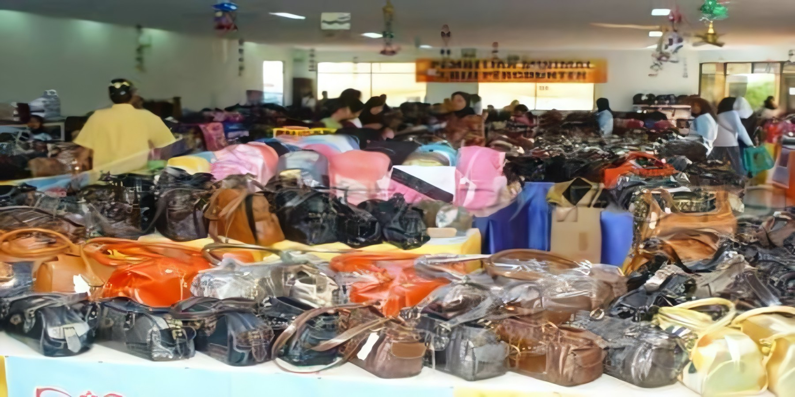
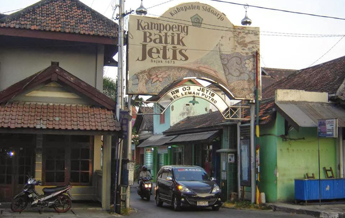

Sentra Produk Tas Tanggulangin
Sejak tahun 1970-an, Kecamatan Tanggulangin telah terkenal sebagai sebuah sentra produksi tas kulit yang berkualitas.
Baca selengkapnya >>>>>

Kampung Batik Jetis
Wisata Kampung Batik Jetis adalah merupakan salah satu tempat wisata di Sidoarjo yang berada di daerah Desa Lemah Putro, Kecamatan Sidoarjo, Kabupaten Sidoarjo, Provinsi Jawa Timur.
Baca selengkapnya >>>>>

Kampung Sepatu Krian
Pusat UKM yang juga menjadi destinasi wisata belanja di Sidoarjo adalah Kampung Sepatu Krian.
Baca selengkapnya >>>>>